E.4 Architecture Implementation: Active Inspection Using Middleboxes#
Active inspection using middleboxes was implemented at both the OSI link layer (Layer 2) and the OSI network layer (Layer 3).
Within the lab, only one middlebox implementation can be functional at any one time. To demonstrate the Layer 2 configuration, the MIRA ETO Middlebox (W) was powered up and
the Layer 3 middlebox was powered down. Similarly, to demonstrate the Layer 3 configuration, the F5 Middlebox (T) was
powered up and the Layer 2 middlebox was powered down.
{kind=link}
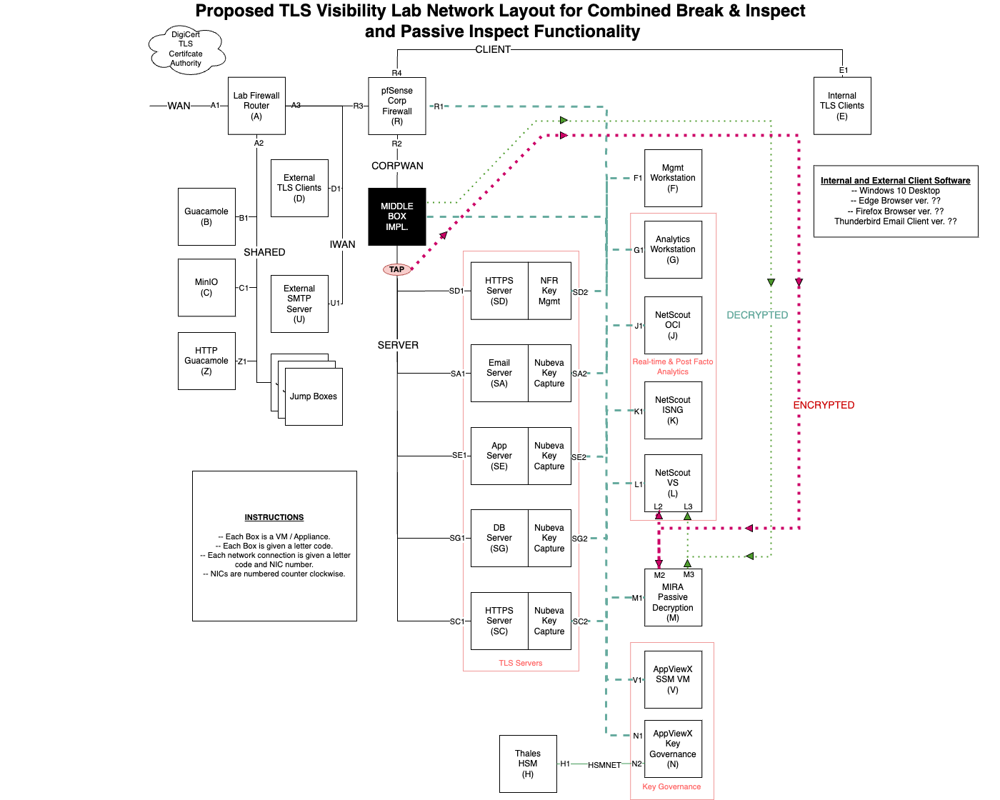
Architecture and Networking details.#
In order to route traffic appropriately in either configuration, the middleboxes were wired in tandem between the Data Center Border Router (RA) and the Data Center Segment Router (RB). Middlebox Networking Details, below,
shows the wiring configurations between the two routers and two middleboxes.
{kind=link}
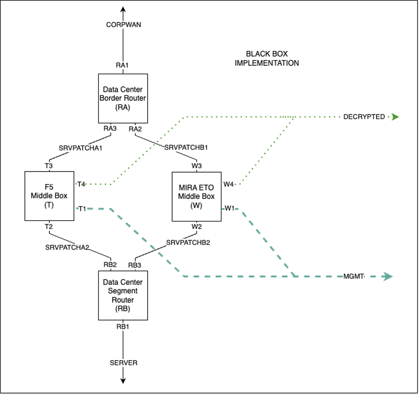
Middlebox Networking Details#
E.4.1 Layer 2 Networking Configuration#
The Layer 2 middlebox is invisible to routers RA and RB. When it is powered up, ARP requests from RA and RB are copied between SRVPATCHB1 and SRVPATCHB2 such that RA and RB have direct connections on the 192.168.80.0/24 network.
The use of three separate subnets between the middleboxes and the routers ensures that regardless of which combination is active, there is a path to the SERVER network segment.
E.4.2 Layer 3 Networking Configuration#
SRVPATCHA1is assigned to the192.168.60.0/24network space.SRVPATCHA2is assigned to the192.168.70.0/24network space.
When the Layer 3 middlebox is powered up, router RA establishes a TCP connection to the middlebox T over network segment SRVPATCHA1.
All traffic destined for a TLS server on the SERVER network has its IP address re-written from the 192.168.30.0/24 address space, to an address in the 192.168.60.0/24 space by the router RA, using the same final octet value in both address spaces.
The F5 middlebox is then configured as a proxy that listens for connections to 192.168.60.0/24.
When a connection to 192.168.60.0/24 is received, the middlebox establishes a connection to the TLS server with the equivalent 192.168.30.0/24 address.
The middlebox has connectivity to the SERVER network segment through network segment SRVPATCHA2 and router RB.
E.4.3 Layer 2 Middlebox Implementation: MIRA ETO#
This build uses the MIRA ETO product as a middlebox to actively break and inspect TLSv1.3 traffic. Because of differences in networking requirements, the passive decryption instance of ETO could not be used for middlebox functionality. A separate instance of ETO was created to function as a middlebox.
Instantiation of the Mira ETO Middlebox Appliance#
The virtual appliance is instantiated from the same virtual appliance template (OVF) file used for the Mira ETO passive build with four network interfaces.
MIRA ETO Middlebox Network Configuration#
Interface |
Network |
IP Address |
Purpose |
|---|---|---|---|
1 |
MANAGEMENT |
192.168.10.65 |
Access to the web-based management console and connectivity to other products. |
2 |
SRVPATCHB1 |
N/A Layer 2 connection |
In combination with SRVPATCHB2, allows MIRA to act as a layer2 passthrough and intercept traffic. |
3 |
SRVPATCHB2 |
N/A Layer 2 connection |
In combination with SRVPATCHB1, allows MIRA to act as a layer2 passthrough and intercept traffic. |
4 |
DECRYPTED |
N/A Layer 2 connection |
Access to the network where decryptors output the decrypted traffic. |
The VM was created with a resource allocation including 8 vCPUs, 16 GB of memory, and 75 GB of storage.
For OSI Layer 2 active break-and-inspect decryption, a MIRA ETO decryptor is configured as a bump-in-the-wire between the appliance’s main0 and main1 interfaces. Depending on configuration, the decrypted traffic will be written to either app0, app1 or both. The decryptor is bi-directional, breaking and inspecting TLS connections originating from either side of the middlebox.
From the Server menu item on the web administration console, select the Settings > Network to configure the appliance network connections. In addition to a management connection, the ETO appliance defines six functional connections by default, named main0, main1, app0, app1, aux0, and aux1. This build only uses the main0, main1, and app0 interfaces.
Using the Ethernet MAC address listed for each interface on the web console, ensure the corresponding virtual NIC of the virtual appliance is connected to the appropriate virtual network. In this build, main0 is connected to the SRVPATCHB1 network (for connectivity to the CORPWAN network), main1 is connected to the SRVPATCHB2 (for connectivity to the SERVER network), and app0 is connected to the DECRYPTED network.
Configuration Procedure#
This section describes the configuration of the MIRA ETO device for intercepting encrypted traffic on Layer 2 and outputting the decrypted traffic.
Additional Configuration Files#
Relevant Configuration Files |
|---|
root/keylog2redis.py |
root/keylog2redis.sh |
root/ScriptInstructions.txt |
The shell script
keylog2redis.shis used to run and capture the output ofkeylog2redis.py.The python script
keylog2redis.pyis used to process Mira’s log files for captured keys, and forward those keys to redis for use by the decryptors.
E.4.4 Layer 3 Middlebox Implementation: F5 BIG-IP#
This build uses the F5 BIG-IP product as a middlebox to actively break and inspect TLSv1.3 traffic.
Instantiation of the F5 BIG-IP Virtual Appliance#
The virtual appliance is instantiated from the vendor supplied virtual appliance template (OVF) file with four network interfaces configured as detailed below. Each network interface is assigned a static IP address on the appropriate subnet. The product instructions were followed for applying the appropriate license keys to the virtual appliance, creating the default administrative user, as well as adding and configuring the four network interfaces.
Additionally, a separate VM was created for the purpose of forwarding exported session keys to the Redis server used by AppViewX and other decryptors. This server runs a syslog server, and converts messages containing keys to the FastKey JSON file, which are then pushed into Redis for use by the decryptors.
F5 BIG-IP Active Decryptor Network Configuration#
Interface |
Network |
IP Address |
Purpose |
|---|---|---|---|
1 |
MANAGEMENT |
192.168.10.2 |
Access to the web-based management console and connectivity to other products. |
2 |
SRVPATCHA1 |
192.168.60.2 |
Upstream of Layer 3 F5 BIG-IP. |
3 |
SRVPATCHA2 |
192.168.70.1 |
Downstream of Layer 3 F5 BIG-IP. |
4 |
DECRYPTED |
N/A Layer 2 connection |
Access to the network where decryptors output the decrypted traffic. |
The VM was created with a resource allocation including 8 vCPUs, 16 GB of memory, and 75 GB of storage.
Additional Modules#
The primary appliance was provisioned with the following modules from the System > Resource Provisioning menu item:
Plugin Name |
|---|
SSL Orchestrator |
Access Policy |
F5 BIG-IP Syslog Server Network Configuration#
This VM, running Ubuntu 20.04.6 LTS was created with a resource allocation including 8 vCPUs, 16 GB of memory, and 75 GB of storage.
F5-Syslog Server Configuration#
The F5-Syslog server build started with a standard Ubuntu 20.04.6 LTS virtual machine created with allocations of 2 vCPUs, 16 GB of memory, 50 GB of storage, and 2 network interface cards.
Network Configuration#
Interface |
Network |
Address |
Purpose |
1 |
MANAGEMENT |
192.168.10.151 |
Management access to the server and transfer of session key material to Key Governance Platform. |
Service Details#
Service |
Version |
Containerized |
|---|---|---|
Syslog-ng |
3.25.1 |
No |
f5forwarder |
N/A |
No |
Notes#
This server hosts a syslog-ng service collecting logs from the F5 BIG-IP device. These logs contain keys to be used for decryption. This server also hosts a python script which continuously reads the logs for these keys, and uploads them to the Redis database for use by the decryptors.
The server was assigned the unique hostname f5-syslog.visibility.nccoe.org. An associated “A” record for the server’s hostname and IP address was recorded in the lab DNS service. The F5-Syslog software was installed using the native “apt” Ubuntu package installer, as well as a custom python script which receives and forwards keys from F5’s syslog to the Redis server.
Configuration Files#
Configuration Files |
|---|
/home/tlsadmin/redis-forwarder/f5-redis.py |
/home/tlsadmin/redis-forwarder/key-remover.py |
/etc/syslog-ng/syslog-ng.conf |
/etc/systemd/system/f5forwarder.service |
f5-redis.pyis the python script used to forward keys extracted from syslog (received from F5 BIG-IP) to the Redis server.f5forwarder.serviceis used to keep the f5-redis.py script running constantly, so as to not fall behind on logs.key-remover.pyis simply a tool used to clear the Redis database of keys. While not part of the build, it is included here for convenience.
Certificates location: /certs
Startup Instructions#
Finally, the F5-Syslog service was enabled through the following commands:
service syslog-ng start
service f5forwarder start
Configuration Procedure#
This section describes the configuration of the F5 BIG-IP device for intercepting encrypted traffic on Layer 3 and outputting the decrypted traffic.
The following
SSL Orchestratorpolicies were configured to support decryption, and associated with the profiles created. This will be highly dependent on the individual build.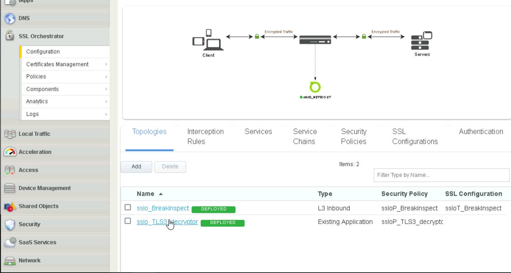
SSL Orchestrator#
Upload each certificate by navigating to
System > Certificate Management > Import SSL Certificates and Keys. SelectCertificateforImport Type.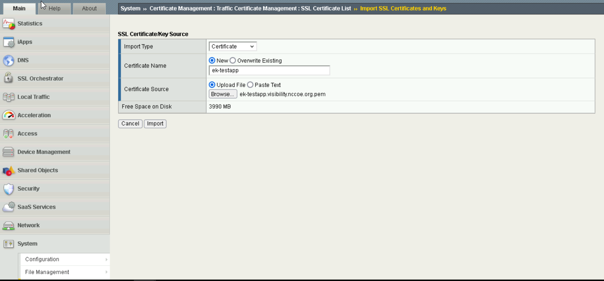
Import Certificates#
Upload each key by navigating to
System > Certificate Management > Import SSL Certificates and Keys. SelectKeyforImport Type.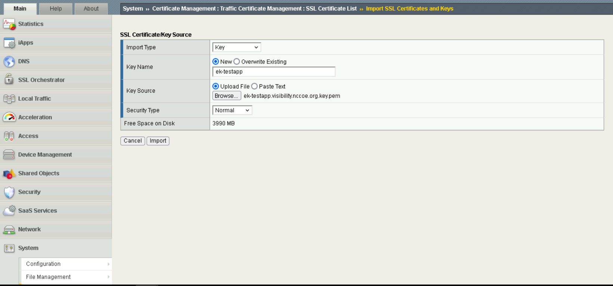
Import Keys#
Create profiles for each server by navigating to
System > Profiles > SSL.force13_clientsslwas used as the base profile, and the correct certificates are selected forCertificate Key Chain.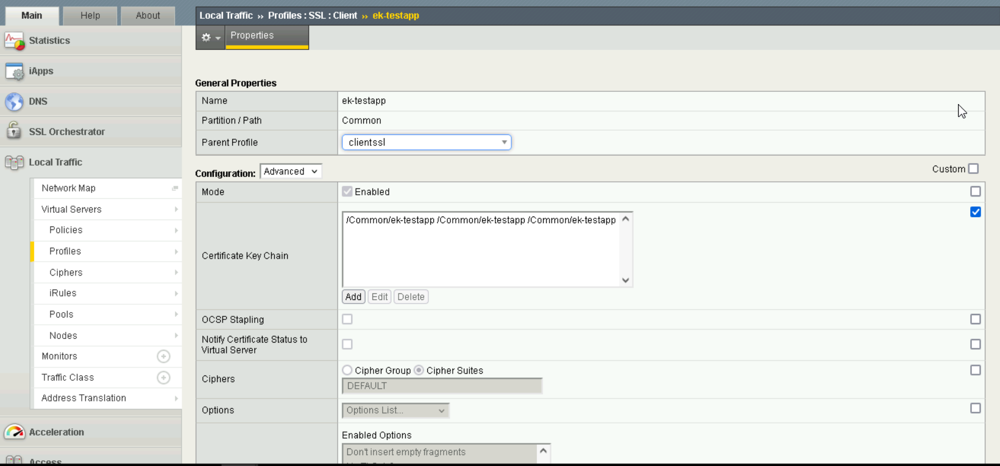
Profile Creation#
For this setup, a pool was created for each server, to ensure that F5 BIG-IP acted as a reverse proxy, by navigating to
Pools.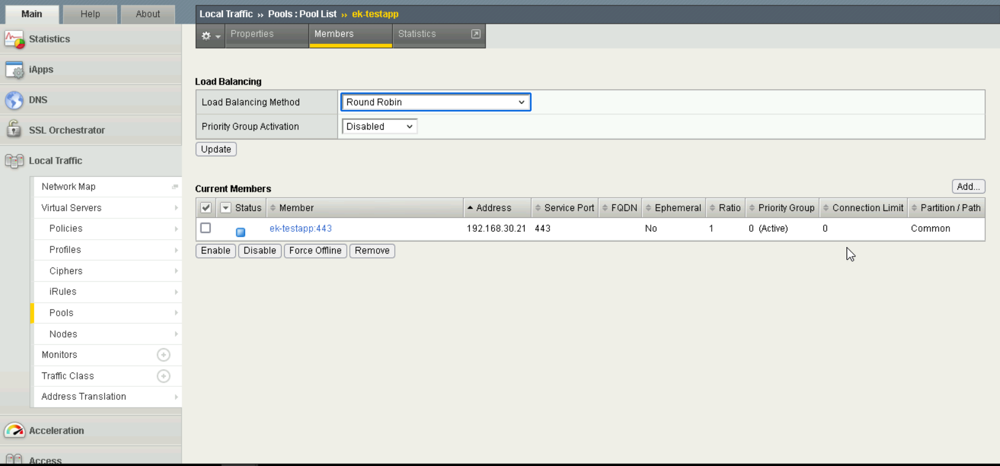
Pool Settings#
A virtual server is created for each server by navigating to
Virtual Server.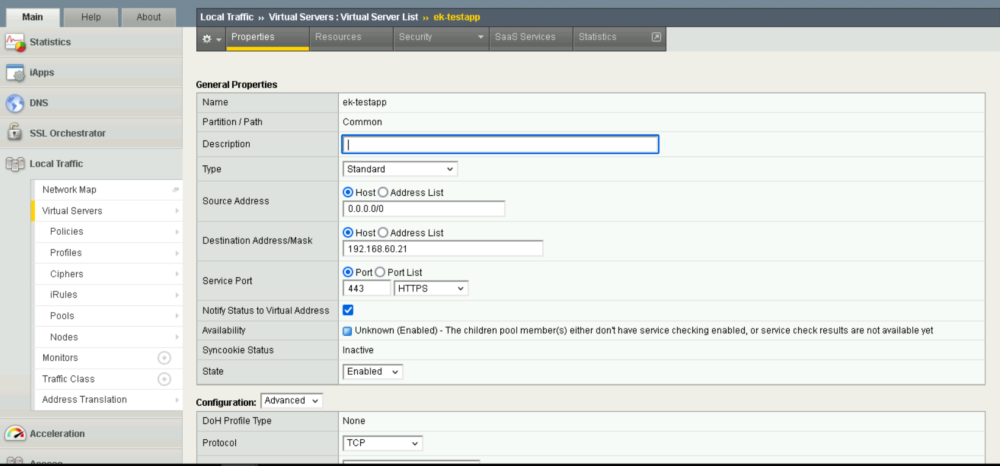
Virtual Server Creation#
Ensure that the correct
SSL profileis associated with each virtual server. Note thatClientrefers to the F5 BIG-IP product acting as a client (communicating with the TLS servers), andServerrefers to the product acting as a server (communicating with clients of the TLS servers).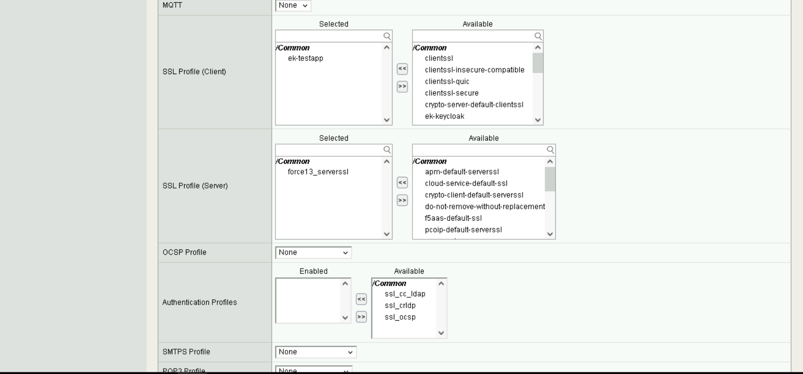
Virtual Server Settings#
Address TranslationandPort Translationare enabled, along with settingSource Address TranslationtoAuto Mapin order to enable the reverse proxy to remap IP addresses from192.168.60.0/24to192.168.30.0/24.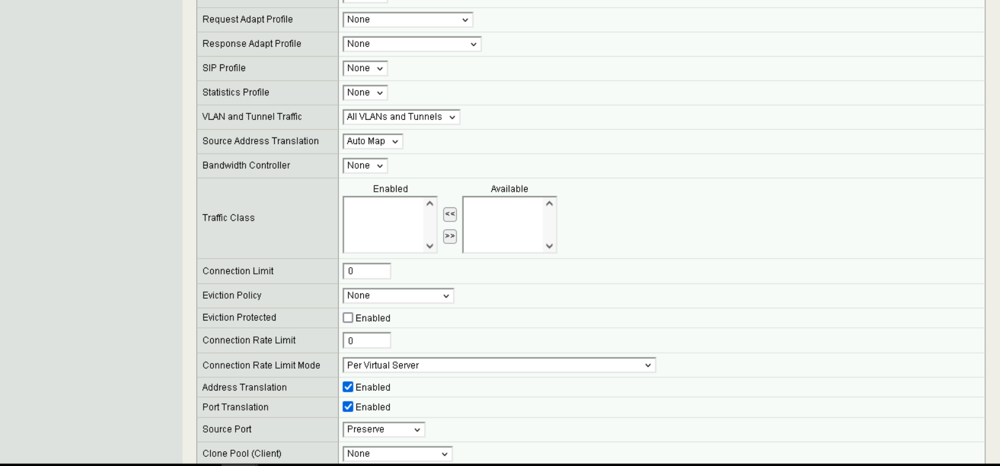
Virtual Server Address Translation#
It is important to ensure that the decryptor policies are selected under
Access Policy.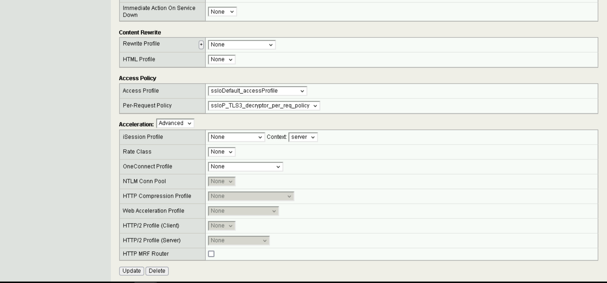
Virtual Server Access Policy#
{kind=link}
{kind=link}
{kind=link}
{kind=link}
{kind=link}
{kind=link}
{kind=link}
{kind=link}
{kind=link}
Additional Configuration Files#
Relevant Configuration Files |
|---|
big-ip/irules/nccoeKeyExportToRedisClientSide_iRule.txt |
big-ip/irules/nccoeKeyExportToRedisServerSide_iRule.txt |
big-ip/irules/ssloS_NETSCOUT-port_remap.txt |
big-ip/irules/sslo_BreakInspect-gw_in_t.txt |
big-ip/irules/sslo_BreakInspect-lib.txt |
A number of iRules were defined for this build within F5.
The iRules
nccoeKeyExportToRedisClientSideandnccoeKeyExportToRedisServerSideexist to forward acquired session keys to Redis, for use by the other decryptors.The
ssloS_NETSCOUT-port_remapiRule remaps traffic from HTTPS to HTTP to better enable the intrusion detection system.Finally, the last two
sslo_BreakInspect-libandsslo_BreakInspect-gw_in_tiRules are associated with hosts to instruct the F5 product to perform Break & Inspect on these hosts.